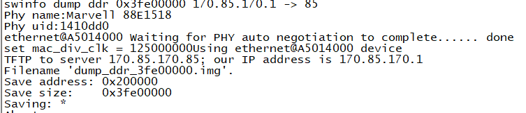
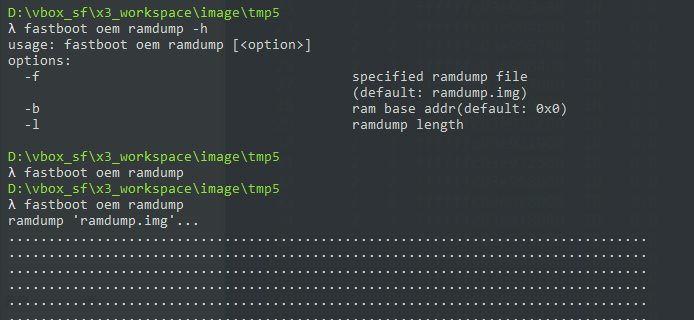
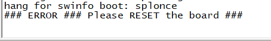
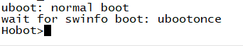
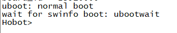

4.5.3. swinfo操作说明(mem-dump功能指导)
4.5.3.1. mem-dump概述
功能
在进行系统调试或故障复现时，配置好mem-dump环境(包括PC侧及SOM板侧)后，在系统crash或panic后，可让SOM板进入到不同的boot状态，或自动将内存镜像dump出来以便crash现场分析。
实现
本功能实现，是通过约定一块spl/uboot/kernel都可访问的区域，用做标志和通知，实现相应功能并提供操作接口。
目前使用了PMU的SWREG和sw_reserved内存区域，可选
| 索引(4B) | SWREG--- | SWMEM--- | 功能定义 | 功能描述 |
|---|---|---|---|---|
| 0 | SWREG0 | MEM+00 | NC/MAGIC | SWREG0在SPL中被休眠功能使用了，此处预留; MEM+00作为MAGIC标志，有效则使用SWMEM，无效则默认使用SWREG |
| 1 | SWREG1 | MEM+04 | Boot | [bit3：0] boot类型：0-正常启动，更多见下文 |
| 2 | SWREG2 | MEM+08 | Dump | tftp的dump主机IP配置：0-不dump，非0-主机IP(如：192.168.1.64 <-> 0xC0A80140) |
上述SWREG和SWMEM都可选用作标志区域，可操作时选择，代码中会根据SWMEM[0]的MAGIC是否有效判断使用哪个。
其内数据对不同的复位操作有不同的特性，如下：
| 操作 | 软件reboot/reset | 硬件RESET | 断电重启 |
|---|---|---|---|
| SWREG | 保留 | 清除 | 清除 |
| SWMEM | 保留 | 保留 | 清除 |
目前支持9种boot状态类型(包括2种dump操作类型)：
| Boot Index | 类型 | 说明 | 备注 |
|---|---|---|---|
| 0 | normal | 正常启动kernel | 默认启动流程 |
| 1 | splonce | spl内等待，并复位标志 | 只等待一次，再硬件reset可正常启动 |
| 2 | ubootonce | uboot内等待，并复位标志 | 只等待一次，再硬件reset可正常启动 |
| 3 | splwait | spl内等待，不复位标志 | SWMEM方式只能断电后正常启动 |
| 4 | ubootwait | uboot内等待，不复位标志 | 若不手动操作清，SWMEM方式只能断电后正常启动 |
| 5 | udumptf | uboot内通过tf卡dump内存 | 自动dump内存镜像文件到FAT32格式的TF卡内 |
| 6 | udumpemmc | uboot内通过emmc dump内存 | 自动dump内存镜像文件到EXT4格式的emmc的userdata分区内 |
| 7 | udumpusb | uboot内通过U盘dump内存 | 自动dump内存镜像文件到FAT32格式的U盘第一个分区内 |
| 8 | udumpfastboot | uboot内通过fastboot dump内存 | PC端安装fastboot工具并使用命令：fastboot oem ramdump即可 |
4.5.3.2. U-Boot操作接口
swinfo命令
U-Boot内增加有swinfo命令对上述SWREG及SWMEM区进行读写操作。该命令有帮助说明如下：
swinfo命令
swinfo - swinfo sub system
Usage：
swinfo info [reg/mem] - display info of the swinfo #查看当前使用的SWINFO区(自动判断SWREG/SWMEM)
swinfo sel [reg/mem] - select reg/mem # 查看/选择SWINFO区使用SWREG或SWMEM
swinfo reg [index [value]] - get/set reg # 查看/设置SWREG区对应索引的值
swinfo mem [index [value]] - get/set mem # 查看/设置SWMEM区对应索引的值
swinfo boot [type] - get/set boot info # 查看/设置当前SWINOF内的boot类型
swinfo dump [iphex] - get/set dump ip in hex # 查看/设置当前SWINOF内的dump IP
使用示例
查看SWINFO当前所有配置值：
Hobot>swinfo info
swinfo：reg -- 00000000a6000200
00：00000000 00000000 00000000 00000000
10：00000000 00000000 00000000 00000000
20：00000000 00000000 00000000 00000000
30：00000000 00000000 00000000 00000000
40：00000000 00000000 00000000 00000000
50：00000000 00000000 00000000 00000000
60：00000000 00000000 00000000 00000000
70：00000000 00000000 00000000 00000000
swinfo boot：0 normal
swinfo dump：none
修改使用SWMEM：
swinfo sel mem
以下打印会出现：
swinfo sel：mem
修改boot状态类型为4(ubootwait)：
swinfo boot 4
以下打印会出现：
swinfo boot：4 ubootwait
修改使能dump标志，并配置主机IP为192.168.1.64：
swinfo dump 0xc0a80140
以下打印会出现：
swinfo dump: 192.168.1.64
查看dump标志状态：
swinfo dump
以下打印会出现：
swinfo dump：192.168.1.64
直接操作SWREG2，写为0xAA55AA55 (SWMEM类同)：
swinfo reg 2 0xAA55AA55
以下打印会出现：
swinfo reg：2[08]: 00000000 -> AA55AA55
直接读取SWREG2的值 (SWMEM类同)：
Hobot>swinfo reg 2
以下打印会出现：
swinfo reg：2[08]: AA55AA55
4.5.3.3. Kernel操作接口
sysfs接口
Kernel内提供了类似的对SWINFO区的操作功能，在sysfs内实现，位于/sys/kernel/hobot-swinfo下，有：
ls /sys/kernel/hobot-swinfo
boot # boot类型查看及设置
dump # dump标志查看及设置
panic # panic时的动作查看及设置
sel # SWREG/SWMEM选择查看及设置
swinfo # SWINFO区当前信息查看(自动识别SWREG/SWMEM)
swmem # SWMEM区查看及设置
swreg # SWREG区查看及设置
使用示例
查看SWINFO当前所有配置值：
cat /sys/kernel/hobot-swinfo/swinfo
以下打印应出现：
~# cat /sys/kernel/hobot-swinfo/swinfo
0[00-ro]：0x00000000 [MAGIC]
1[04-rw]：0x00000000
2[08-rw]：0x00000000
3[0C-rw]：0x00000000
修改使用SWMEM：
echo mem > /sys/kernel/hobot-swinfo/sel
修改boot状态类型为4(ubootwait)：
echo 4 > /sys/kernel/hobot-swinfo/boot
修改使能dump标志，并配置主机IP为192.168.1.64：
echo 192.168.1.64 > /sys/kernel/hobot-swinfo/dump
查看dump标志状态：
cat /sys/kernel/hobot-swinfo/dump
以下打印应出现：
~# cat /sys/kernel/hobot-swinfo/dump
dump: 0xC0A80140 192.168.1.64
直接操作SWREG2，写为0xAA55AA55 (SWMEM类同)：
echo 2=0xAA55AA55 > /sys/kernel/hobot-swinfo/swreg
直接读取SWREG2的值(SWMEM类同)：
cat /sys/kernel/hobot-swinfo/swreg |grep " 2\["
以下打印应出现：
2[08-rw]：0xAA55AA55
上述的echo操作都是完成后直接影响SWMEM/SWREG的，期间重启自动生效，而要想在此状态下正常reboot，需要使用echo 0清除相应标志。
为此，增加了panic预配置接口，配置在系统panic时(注：直接挂死的情况不适用)，才去真正操作相应标志，实现不影响正常reboot操作的boot/dump调试功能：
如预设panic时写boot类型为4-ubootwait(各boot类型及功能定义同上)：
echo boot=4 >/sys/kernel/hobot-swinfo/panic
~# echo boot=4 >/sys/kernel/hobot-swinfo/panic
如预设panic时写dump为192.168.1.64：
echo dump=192.168.1.64 >/sys/kernel/hobot-swinfo/panic
~# echo dump=192.168.1.64 >/sys/kernel/hobot-swinfo/panic
可查看panic预设操作信息：
cat /sys/kernel/hobot-swinfo/panic
~# cat /sys/kernel/hobot-swinfo/panic
panic:dump=0xC0A80140 192.168.1.64
4.5.3.4. dump使用说明
场景：重启后自动存内存镜像：TFTP
对于一般故障复现测试场景中，可搭建测试及dump环境，在系统Crash重启后，自动进入uboot，通过tftp命令将内存镜像保存，以便分析。
PC上搭建tftp服务器
手动搭建，可参考：准备工作（tftp服务器搭建及nfs挂载）
直接使用升级工具自带的tftp服务：Horizon产品升级工具
配置好PC网口的IP，如：192.168.1.64(配置中要使用)。
配置dump标志
首先根据目标场景在运行前进行配置，方法如下：
有2种方法可选：
kernel可正常启动，在linux命令行内执行：
echo 192.168.1.64 > /sys/kernel/hobot-swinfo/dump
上为直接操作立即生效，而若仅需在panic时生效(不影响reboot或reset引发的重启)，可预设：
echo dump=192.168.1.64 > /sys/kernel/hobot-swinfo/panic
kernel不可正常启动，在uboot命令行内执行：
swinfo dump 0xc0a80140
故障并自动dump
配置完成后，测试运行，等待故障重启。或测试可通过sysrq产生一个panic：
echo c > /proc/sysrq-trigger
重启后进入uboot内，自动根据dump配置值，进行serverip及ipaddr配置，使用tftp将全内存镜像写为dump_ddr_${ddr_size}.img文件。
此处IP规则为：同子网段，serverip非1，则ipaddr为1; serverip为1，则ipaddr为10。如下：

在dump成功后，将自动清dump标志，并停在uboot命令行内。
注意，此处的dump标志在配置完成后，若想正常软件重启，需先配回0状态(linux内panic预设的不用)：
linux内reboot前：
echo 0 > /sys/kernel/hobot-swinfo/dump
uboot内reset前：
swinfo dump 0
场景：重启后自动存内存镜像：TF/SD卡
对于不方便使用tftp网络方式(或嫌慢)的dump需求，且设备有TF/SD卡的场景，可直接将内存dump到TF/SD卡内，直接从卡内获取dump文件分析。
TF/SD卡格式化
首先要准备待使用的TF/SD卡，为让uboot正常识别并使用，需要先对TF/SD卡进行分区并格式化。TF/SD卡应处于FAT32格式。
在Linux下操作，若直接在X3J3上Linux内进行，由于目前暂默认不支持mkfs.fat命令，请交叉编译ARM指令集下的parted及mkfs.fat工具。以下例子假设TF/SD卡被挂在为”mmcblk1”，格式化前请卸载SD卡：
TF/SD卡格式化：
~# parted /dev/mmcblk1 mktable gpt
~# parted /dev/mmcblk1 mkpart primary fat32 1Mib 100%
~# mkfs.fat /dev/mmcblk1p1
也可直接在PC上完成，但请注意上述“/dev/mmcblk1”应使用PC识别出TF/SD卡的对应设备。
配置boot标志
首先根据目标场景在运行前进行配置，方法如下：有2种方法可选：
kernel可正常启动，在linux命令行内执行：
echo 5 > /sys/kernel/hobot-swinfo/boot
上为直接操作立即生效，而若仅需在panic时生效(不影响reboot或reset引发的重启)，可预设：
echo boot=5 > /sys/kernel/hobot-swinfo/panic
kernel不可正常启动，在uboot命令行内执行：
swinfo boot 5
故障并自动dump
配置完成后，测试运行，等待故障重启。或测试可通过sysrq产生一个panic：
echo c > /proc/sysrq-trigger
重启后进入uboot内，自动根据boot配置值，有如下提示：
dump ddr 0x40000000 -\> tfcard:1
使用fatwrite命令将内存dump到TF/SD卡的分区1内，并在dump成功后，将自动清dump标志，并停在uboot命令行内。
在uboot内可通过命令查看到该dump_ddr_xxxx,img文件，之后可取出TF/SD卡，直接使用该文件进行crash分析：
fatls mmc 1:1
场景：重启后自动存内存镜像：EMMC
对于不方便使用tftp网络方式(或嫌慢)的dump需求，设备又无TF/SD卡的场景，可直接将内存dump到emmc的userdata区内，之后再通过其他方式取出该文件分析。
配置boot标志
首先根据目标场景在运行前进行配置，方法如下：有2种方法可选：
kernel可正常启动，在linux命令行内执行：
echo 6 > /sys/kernel/hobot-swinfo/boot
上为直接操作立即生效，而若仅需在panic时生效(不影响reboot或reset引发的重启)，可预设：
echo boot=6 > /sys/kernel/hobot-swinfo/panic
kernel不可正常启动，在uboot命令行内执行：
swinfo boot 6
故障并自动dump
配置完成后，测试运行，等待故障重启。
或测试可通过sysrq产生一个panic：
echo c > /proc/sysrq-trigger
重启后进入uboot内，自动根据boot配置值，有如下提示：
swinfo dump ddr 0x40000000 -> emmc:12
使用fatwrite命令将内存dump到EMMC分区12(userdata)内，并在dump成功后，将自动清dump标志，并停在uboot命令行内。
在uboot内可通过命令查看到该dump_ddr_xxxx,img文件，之后可启动到linux，通过sftp或tftp等方式取出该文件进行crash分析：
ext4ls mmc 0:c
场景: 重启后自动存内存镜像: U盘
配置boot标志
首先根据目标场景在运行前进行配置，方法如下：
有2种方法可选：
kernel可正常启动，在linux命令行内执行：
echo udumpusb > /sys/kernel/hobot-swinfo/boot
上为直接操作立即生效，而若仅需在panic时生效(不影响reboot或reset引发的重启)，可预设：
echo boot=7 > /sys/kernel/hobot-swinfo/panic
kernel不可正常启动，在uboot命令行内执行：
swinfo boot 7
故障并自动dump
配置完成后，测试运行，等待故障重启。
或测试可通过sysrq产生一个panic：
echo c > /proc/sysrq-trigger
重启后进入uboot内，自动根据boot配置值，有如下提示：
swinfo dump ddr 0x40000000 -> usb
U盘中会产生dump_ddr_xxxx,img 文件即为ramdump文件
场景：重启后自动存内存镜像：fastboot
配置boot标志
首先根据目标场景在运行前进行配置，方法如下：
有2种方法可选：
Kernel可正常启动，在linux命令行内执行：
echo udumpfastboot > /sys/kernel/hobot-swinfo/boot
上为直接操作立即生效，而若仅需在panic时生效(不影响reboot或reset引发的重启)，可预设：
echo boot=8 > /sys/kernel/hobot-swinfo/panic
Kernel无法正常启动，在UBoot命令行执行：
swinfo boot 8
故障并自动dump
配置完成后，测试运行，等待故障重启。
或测试可通过sysrq产生一个panic：
echo c > /proc/sysrq-trigger
重启后开发板会停留在fastboot ramdump模式下, 如下图：
PC端利用fastboot工具：
fastboot oem ramdump

注意：
如未配置sw_info, panic后会自动进入uboot, 可于uboot中使用命令：
fastboot 0
以启动fastboot，效果一样。
场景：重启后停止在SPL阶段
对于有BIF接口，可通过AP或PC直接访问SOM的内存的，获取dump镜像的场景，可在系统故障后让其停在SPL阶段，以保留内存原始状态。首先根据目标场景在运行前进行配置，方法如下：要求按硬件RESET键后就可正常启动的场景，有2种情况：
kernel可正常启动，在linux命令行内执行：
echo 1 > /sys/kernel/hobot-swinfo/boot
kernel不可正常启动，在uboot命令行内执行：
swinfo boot 1
配置好后，测试运行，故障发生或重启后，将进入到spl内等待，如下(按RESET可正常重启运行)：

若要求只能断电才能正常启动(如十分重要的现场，避免误触破坏)：
kernel可正常启动，在linux命令行内执行：
echo mem > /sys/kernel/hobot-swinfo/sel
echo 3 > /sys/kernel/hobot-swinfo/boot
kernel不可正常启动，在uboot命令行内执行：
swinfo sel mem
swinfo boot 3
配置好后，测试运行，故障发生或重启后，将进入到spl内等待，如下(按RESET依然会停在此，需断电重启)：
注意：此处的boot标志在配置完成后，若想正常软件重启，需先配回0状态：
linux内reboot前：
echo 0 > /sys/kernel/hobot-swinfo/boot
uboot内reset前：
swinfo boot 0
场景：重启后停止在u-boot命令行
对于一些需要重启后停留在uboot命令行状态的场景，可按如下操作。首先根据目标场景在运行前进行配置，方法如下：
要求按硬件RESET键后就可正常启动的场景，有2种情况：
kernel可正常启动，在linux命令行内执行：
echo 2 > /sys/kernel/hobot-swinfo/boot
kernel不可正常启动，在uboot命令行内执行：
swinfo boot 2
配置好后，测试运行，故障发生或重启后，将进入到uboot命令行内等待(按RESET或reset命令可正常重启运行)：

若要求只能断电才能正常启动(如十分重要的现场，避免误触破坏)：
kernel可正常启动，在linux命令行内执行：
echo mem > /sys/kernel/hobot-swinfo/sel
echo 4 > /sys/kernel/hobot-swinfo/boot
kernel不可正常启动，在uboot命令行内执行：
swinfo sel mem
swinfo boot 4
配置好后，测试运行，故障发生或重启后，将进入到uboot命令行内等待(按RESET依然会停在此，需断电重启或清标志)：

注意：
处于ubootwait状态的单板，若想再次重新启动，可断电重启，或如下操作：
uboot内reset前：
swinfo boot 0
4.5.3.5. 功能测试说明
SWREG/SWMEM选择功能
uboot命令行内：
swinfo sel
查看当前默认为SWREG(reg)，选为SWMEM：
swinfo sel mem
重启：
reset
重启后再进uboot，查看当前有效的swinfo：
swinfo sel
此时应已识别为SWMEM类型：mem
boot类型功能
linux命令行内(以下为1，其他类型同理)：
echo 1 > /sys/kernel/hobot-swinfo/boot
reboot
或uboot命令行内(以下为1，其他类型同理)：
swinfo boot 1
reset
重启后进入不同的状态：
0 – normal，正常linux启动流程;
1 – splonce，停在spl内，可按键复位;
2 – ubootonce，停在uboot内，可按键复位;
3 – splwait，停在spl内，选reg可按键复位，选mem只能断电重启;
4 – ubootwait，停在uboot内，选reg可按键复位，选mem只能断电重启;
5 – udumptf，在panic或重启后，自动dump内存到TF/SD卡内;
6 – udumpemmc，在panic或重启后，自动dump内存到emmc的userdata分区内;
7 – udumpusb，在panic或重启后，自动dump内存到FAT32格式的U盘第一个分区内；
8 – udumpfastboot，在panic或重启后，自动通过Fastboot dump内存。
dump功能
参考目标前文说明，构建tftp服务器，并配置好IP，如192.168.1.64，执行：
echo 192.168.1.64 > /sys/kernel/hobot-swinfo/dump
等待系统panic或通过以下命令手动触发系统panic：
echo c > /proc/sysrq-trigger
报panic后自动重启，自动进入uboot并在tftp服务器根目录下生成1个内存大小的dump_ddr_xxx.img文件。
panic预设功能
参考上述21.3.2示例，预设操作只对panic有效果，直接reboot无效：
echo boot=2 > /sys/kernel/hobot-swinfo/panic
echo c > /proc/sysrq-trigger
报panic后自动重启，自动进入uboot并等待，满足预定功能，uboot下boot重进系统后：
echo boot=2 > /sys/kernel/hobot-swinfo/panic
reboot
对于非panic重启，该预设操作不生效，不影响正常启动流程。